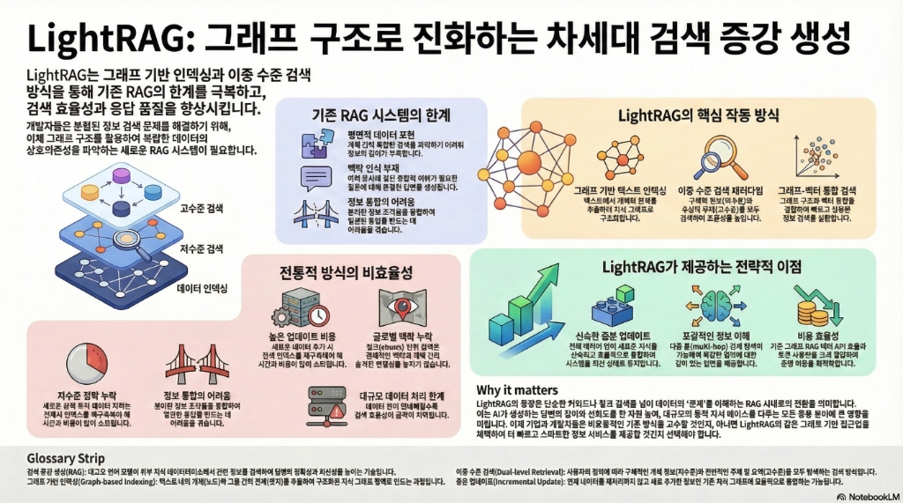

<!DOCTYPE html>
<html lang="ko">

<head>
    <meta charset="UTF-8">
    <meta name="viewport" content="width=device-width, initial-scale=1.0">
    <title>LightRAG React Overlay Component</title>
    <!-- React & ReactDOM -->
    <script crossorigin src="https://unpkg.com/react@18/umd/react.development.js"></script>
    <script crossorigin src="https://unpkg.com/react-dom@18/umd/react-dom.development.js"></script>
    <!-- Babel -->
    <script src="https://unpkg.com/@babel/standalone/babel.min.js"></script>
    <!-- Google Fonts -->
    <link href="https://fonts.googleapis.com/css2?family=Noto+Sans+KR:wght@400;500;700;900&display=swap"
        rel="stylesheet">
    <style>
        body {
            margin: 0;
            padding: 0;
            background-color: #f0f2f5;
            font-family: 'Noto Sans KR', sans-serif;
        }

        #root {
            width: 100vw;
            height: 100vh;
            display: flex;
            justify-content: center;
            align-items: center;
        }
    </style>
</head>

<body>
    <div id="root"></div>

    <script type="text/babel">
        const textData = [
            // --- HEADER ---
            {
                id: 'title',
                text: "LightRAG: 그래프 구조로 진화하는 차세대 검색 증강 생성",
                top: '5%', left: '3.5%', width: '90%', fontSize: '2.8vw', fontWeight: '900', color: '#000', bg: '#ffffff'
            },
            {
                id: 'subtitle',
                text: "LightRAG는 그래프 기반 인덱싱과 이중 수준 검색\n방식을 통해 기존 RAG의 한계를 극복하고,\n검색 효율성과 응답 품질을 향상시킵니다.",
                top: '13.5%', left: '3.5%', width: '38%', fontSize: '1.2vw', fontWeight: '700', color: '#333', bg: '#ffffff', lineHeight: '1.4'
            },
            {
                id: 'intro',
                text: "개발자들은 분절된 정보 검색 문제를 해결하기 위해,\n이체 그래프 구조를 활용하여 복잡한 데이터의\n상호의존성을 파악하는 새로운 RAG 시스템이 필요합니다.",
                top: '25%', left: '3.5%', width: '26%', fontSize: '0.9vw', fontWeight: '500', color: '#555', bg: '#ffffff', lineHeight: '1.5'
            },

            // --- STACK DIAGRAM LABELS ---
            {
                id: 'stack-high',
                text: "고수준 검색",
                top: '38%', left: '19.5%', width: '8.5%', fontSize: '0.9vw', fontWeight: '700', color: '#333', bg: '#ffffff'
            },
            {
                id: 'stack-low',
                text: "저수준 검색",
                top: '49%', left: '19.5%', width: '8.5%', fontSize: '0.9vw', fontWeight: '700', color: '#333', bg: '#ffffff'
            },
            {
                id: 'stack-idx',
                text: "데이터 인덱싱",
                top: '58%', left: '19.5%', width: '9.5%', fontSize: '0.9vw', fontWeight: '700', color: '#333', bg: '#ffffff'
            },

            // --- RED SIDE NOTES ---
            {
                id: 'red-note-1',
                text: "저수준 맥락 누락\n새로운 검색 쿼리 데이터 처리는\n전체 인덱스를 재구축해야 해\n시간과 비용이 많이 소요됩니다.",
                top: '78%', left: '4%', width: '13%', fontSize: '0.75vw', fontWeight: '600', color: '#7f1d1d', bg: '#fef2f2', textAlign: 'center'
            },
            {
                id: 'red-note-2',
                text: "정보 통합의 어려움\n분리된 정보 조각들을 통합하여\n일관된 통찰을 만드는 데\n어려움을 겪습니다.",
                top: '78%', left: '18%', width: '13%', fontSize: '0.75vw', fontWeight: '600', color: '#7f1d1d', bg: '#fef2f2', textAlign: 'center'
            },

            // --- BLUE BOX (Limits) ---
            {
                id: 'blue-title',
                text: "기존 RAG 시스템의 한계",
                top: '22%', left: '39%', width: '16%', fontSize: '1.1vw', fontWeight: '800', color: '#1e3a8a', bg: '#eff6ff', padding: '5px'
            },
            {
                id: 'blue-item-1',
                text: "평면적 데이터 표현\n개체 간의 복잡한 관계를 파악하기 어려워\n정보의 깊이가 부족합니다.",
                top: '26%', left: '36.5%', width: '17%', fontSize: '0.75vw', fontWeight: '600', color: '#1e3a8a', bg: '#eff6ff', lineHeight: '1.3'
            },
            {
                id: 'blue-item-2',
                text: "맥락 인식 부재\n여러 문서에 걸친 종합적 이해가 필요한\n질문에 대해 적절한 답변을 생성하기 힘듭니다.",
                top: '34.5%', left: '36.5%', width: '17%', fontSize: '0.75vw', fontWeight: '600', color: '#1e3a8a', bg: '#eff6ff', lineHeight: '1.3'
            },
            {
                id: 'blue-item-3',
                text: "정보 통합의 어려움\n분리된 정보 조각들을 융합하여\n일관된 통찰을 만드는 데\n어려움을 겪습니다.",
                top: '43.5%', left: '36.5%', width: '17%', fontSize: '0.75vw', fontWeight: '600', color: '#1e3a8a', bg: '#eff6ff', lineHeight: '1.3'
            },

            // --- ORANGE BOX (Mechanism) ---
            {
                id: 'orange-title',
                text: "LightRAG의 핵심 작동 방식",
                top: '22%', left: '68%', width: '19%', fontSize: '1.1vw', fontWeight: '800', color: '#9a3412', bg: '#fff7ed', padding: '5px'
            },
            {
                id: 'orange-item-1',
                text: "그래프 기반 텍스트 인덱싱\n텍스트에서 개체와 관계를\n추출하여 지식 그래프로\n구조화합니다.",
                top: '37.5%', left: '59%', width: '12%', fontSize: '0.75vw', fontWeight: '600', color: '#9a3412', bg: '#fff7ed', textAlign: 'center'
            },
            {
                id: 'orange-item-2',
                text: "이중 수준 검색 패러다임\n구체적 정보(저수준)와\n추상적 주제(고수준)를 모두\n검색하여 효용성을 높입니다.",
                top: '37.5%', left: '72.5%', width: '12%', fontSize: '0.75vw', fontWeight: '600', color: '#9a3412', bg: '#fff7ed', textAlign: 'center'
            },
            {
                id: 'orange-item-3',
                text: "그래프-벡터 통합 검색\n그래프 구조와 벡터 통합을\n결합하여 빠르고 심층된\n정보 검색을 실현합니다.",
                top: '37.5%', left: '85.5%', width: '12%', fontSize: '0.75vw', fontWeight: '600', color: '#9a3412', bg: '#fff7ed', textAlign: 'center'
            },

            // --- PINK BOX (Inefficiencies) ---
            {
                id: 'pink-title',
                text: "전통적 방식의 비효율성",
                top: '54.5%', left: '37%', width: '16%', fontSize: '1.1vw', fontWeight: '800', color: '#9f1239', bg: '#fdf2f2', padding: '5px'
            },
            {
                id: 'pink-item-1',
                text: "높은 업데이트 비용\n새로운 데이터 추가 시\n전체 인덱스를 재구축해야 해\n시간과 비용이 많이 소요됩니다.",
                top: '66.5%', left: '31%', width: '12%', fontSize: '0.75vw', fontWeight: '600', color: '#be123c', bg: '#fdf2f2', textAlign: 'center'
            },
            {
                id: 'pink-item-2',
                text: "글로벌 맥락 누락\n청크(chunk) 단위 검색은\n전체적인 맥락과 관계 간의\n숨겨진 연결성을 놓치기 쉽습니다.",
                top: '66.5%', left: '44%', width: '12%', fontSize: '0.75vw', fontWeight: '600', color: '#be123c', bg: '#fdf2f2', textAlign: 'center'
            },
            {
                id: 'pink-item-3',
                text: "대규모 데이터 처리 한계\n데이터 양이 방대해질수록\n검색 효율성이 급격히 저하됩니다.",
                top: '68.5%', left: '58%', width: '12%', fontSize: '0.75vw', fontWeight: '600', color: '#be123c', bg: '#fdf2f2', textAlign: 'center' // Center align for consistency
            },

            // --- GREEN BOX (Advantages) ---
            {
                id: 'green-title',
                text: "LightRAG가 제공하는 전략적 이점",
                top: '53%', left: '68%', width: '21%', fontSize: '1.1vw', fontWeight: '800', color: '#166534', bg: '#f0fdf4', padding: '5px'
            },
            {
                id: 'green-item-1',
                text: "신속한 증분 업데이트\n전체 재처리 없이 새로운 지식을\n신속하고 효율적으로 통합하여\n시스템을 최신 상태로 유지합니다.",
                top: '64.5%', left: '61%', width: '11%', fontSize: '0.75vw', fontWeight: '600', color: '#15803d', bg: '#f0fdf4', textAlign: 'center'
            },
            {
                id: 'green-item-2',
                text: "포괄적인 정보 이해\n다중 홉(multi-hop) 관계 탐색이\n가능하여 복잡한 질의에 대한\n깊이 있는 답변을 제공합니다.",
                top: '64.5%', left: '74%', width: '11%', fontSize: '0.75vw', fontWeight: '600', color: '#15803d', bg: '#f0fdf4', textAlign: 'center'
            },
            {
                id: 'green-item-3',
                text: "비용 효율성\n기존 그래프 RAG 대비 API 호출과\n토큰 사용량을 크게 줄여\n운영 비용을 획기적으로 절감합니다.",
                top: '64.5%', left: '87%', width: '11%', fontSize: '0.75vw', fontWeight: '600', color: '#15803d', bg: '#f0fdf4', textAlign: 'center'
            },

            // --- WHY IT MATTERS ---
            {
                id: 'matter-title',
                text: "Why it matters",
                top: '77%', left: '52.5%', width: '13%', fontSize: '1.2vw', fontWeight: '900', color: '#000', bg: '#ffffff'
            },
            {
                id: 'matter-desc',
                text: "LightRAG의 등장은 단순한 키워드나 청크 검색을 넘어 데이터의 '관계'를 이해하는 RAG 시대로의 전환을 의미합니다.\n이는 AI가 생성하는 답변의 깊이와 신뢰도를 한 차원 높여, 대규모의 동적 지식 베이스를 다루는 모든 응용 분야에 큰 영향을\n미칩니다. 이제 기업과 개발자들은 비효율적인 기존 방식을 고수할 것인지, 아니면 LightRAG와 같은 그래프 기반 접근법을\n채택하여 더 빠르고 스마트한 정보 서비스를 제공할 것인지 선택해야 합니다.",
                top: '80%', left: '52.5%', width: '45%', fontSize: '0.8vw', fontWeight: '500', color: '#333', bg: '#ffffff', lineHeight: '1.5'
            },

            // --- FOOTER GLOSSARY ---
            {
                id: 'glossary-strip',
                text: "Glossary Strip",
                top: '91%', left: '3%', width: '10%', fontSize: '0.9vw', fontWeight: '900', color: '#000', bg: '#e5e7eb'
            },
            {
                id: 'glossary-content',
                text: "검색 증강 생성(RAG): 대규모 언어 모델이 외부 지식 데이터베이스에서 관련 정보를 검색하여 답변의 정확성과 최신성을 높이는 기술입니다.   이중 수준 검색(Dual-level Retrieval): 사용자의 질의에 따라 구체적인 개별 정보(저수준)와 전반적인 주제 및 요약(고수준)을 모두 탐색하는 검색 방식입니다.\n그래프 기반 인덱싱(Graph-based indexing): 텍스트 내의 개체(노드)와 그들 간의 관계(엣지)를 추출하여 구조화된 지식 그래프 형태로 만드는 과정입니다.   증분 업데이트(Incremental Update): 전체 데이터를 재처리하지 않고 새로 추가된 정보만 기존 지식 그래프에 효율적으로 통합하는 기능입니다.",
                top: '93%', left: '3%', width: '94%', fontSize: '0.6vw', fontWeight: '500', color: '#333', bg: '#e5e7eb', lineHeight: '1.4'
            }
        ];

        const LightRAGOverlay = () => {
            return (
                <div style={{ position: 'relative', width: '90vw', maxWidth: '1600px', boxShadow: '0 10px 30px rgba(0,0,0,0.1)' }}>
                    {/* Main Background Image */}
                    

                    {/* Overlay Text Blocks */}
                    {textData.map((item) => (
                        <div
                            key={item.id}
                            style={{
                                position: 'absolute',
                                top: item.top,
                                left: item.left,
                                width: item.width,
                                backgroundColor: item.bg,
                                color: item.color,
                                fontSize: item.fontSize,
                                fontWeight: item.fontWeight,
                                lineHeight: item.lineHeight || '1.2',
                                textAlign: item.textAlign || 'left',
                                whiteSpace: 'pre-wrap',
                                wordBreak: 'keep-all',
                                padding: '2px', // Slight padding to cover edges
                                zIndex: 10,
                                // border: '1px solid red', // Debugging: Uncomment to see boundaries
                            }}
                        >
                            {item.text}
                        </div>
                    ))}
                </div>
            );
        };

        const root = ReactDOM.createRoot(document.getElementById('root'));
        root.render(<LightRAGOverlay />);
    </script>
</body>

</html>